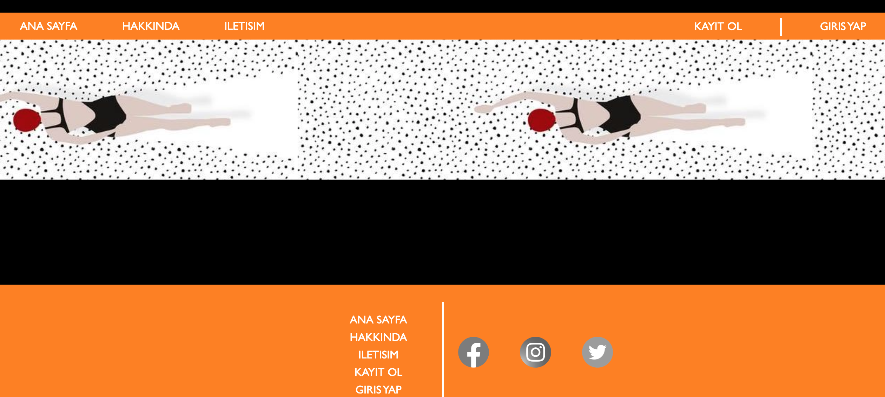

proje 1
proje 2

proje 3

proje 4
proje 1
websitesi tasarımı: logolu navbar tasarlanmıştır. örnekte kullanıcı girişi sayfası yer almaktadır.
proje 2
websitesi tasarımı: yazıların sola ve sağa konumlandığı bir navbar oluşturulmuştur. hemen altında banner ve en sonda da sosyal medyalara yönlendiren ikonların olduğu bir footer bulunmaktadır.
proje 3
restoran websitesi tasarımı: bannerda restoranın sloganın yer aldığı bir yazıyla yemeklerinin bulunduğu bir fotoğraf yer almaktadır. devamında menüden ve restorandan fotoğraflar ve açıklayıcı yazılar yer almaktadır.
proje 4
websitesi tasarımı: navbarda logo ve sayfalar ortada konumlandırılırken solda ülke seçimi, sağda ise arama ve alışveriş sepeti ikonları yer almaktadır.
daha fazlası için
expand_more